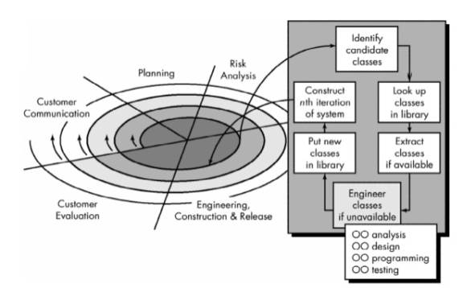
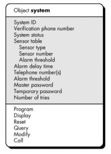
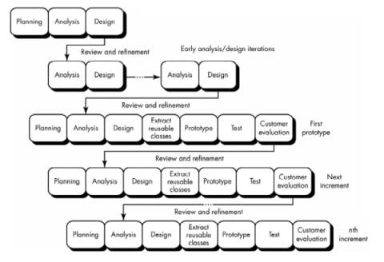
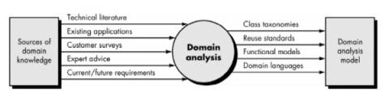
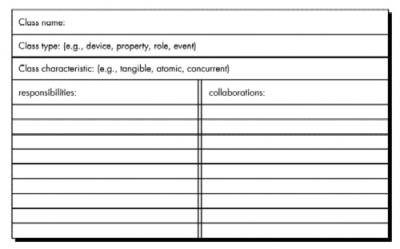
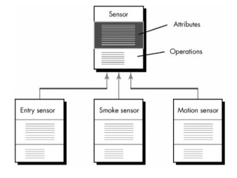
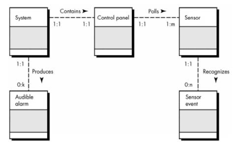

CS616 – Software Engineering II
|
|
Lecture
1 |
Object-oriented Software Engineering
- Follows same steps as the conventional approach
- Harder to separate them into discrete
activities.
Evolutionary Object-Oriented Process Model
- Customer communication
- Planning
- Risk analysis
- Engineering
construction and analysis
- Identify candidate
classes
- Look-up classes in
library
- Extract classes if
available
- Engineer classes if not
available
- Object-oriented
analysis (OOA)
- Object-oriented design
(OOD)
- Object-oriented
programming (OOP)
- Object-oriented
testing (OOT)
- Put new classes in
library
- Construct Nth iteration
of the system
- Customer evaluation

Advantages of Object-Oriented Architectures
- Implementation details of
data and procedures and hidden from the outside world (reduces the
propagation of side effects when changes are made).
- Data structures and
operators are merged in single entity or class (this facilitates reuse)
- Interfaces among encapsulated objects are simplified (system coupling is reduced since object needs not be concerned about the details of internal data structures)
Class Construction Options
- Build new class from
scratch without using inheritance
- Use inheritance to
create new class from existing class contains most of the desired
attributes and operations
- Restructure the class
hierarchy so that the required attributes and operations can be inherited
by the newly created class
- Override some
attributes or operations in an existing class and use inheritance to
create a new class with (specialized) private versions of these attributes
and operations.
Object-Oriented Concepts
- Objects - encapsulates both
data (attributes) and data manipulation functions (called methods,
operations, and services)
- Class - generalized
description (template or pattern) that describes a collection of similar
objects
- Superclass - a collection of
objects
- Subclass - an instance of a
class
- Class hierarchy - attributes and
methods of a superclass are inherited by its subclasses
- Messages - the means by which
objects exchange information with one another
- Inheritance - provides a means for
allowing subclasses to reuse existing superclass data and procedures; also
provides mechanism for propagating changes
- Polymorphism - a mechanism that
allows several objects in a class hierarchy to have different methods with
the same name (instances of each subclass will be free to respond to
messages by calling their own version of the method)
Identifying the Elements of an Object Model
Objects can be:
- External entities (e.g.,
other systems, devices, people) that produce or consume information to be
used by a computer-based system.
- Things (e.g, reports, displays, letters, signals) that are part of the
information domain for the problem.
- Occurrences or events (e.g., a property transfer or the completion of
a series of robot movements) that occur within the context of system
operation.
- Roles (e.g., manager, engineer, salesperson) played by people who
interact with the system.
- Organizational units (e.g.,
division, group, team) that are relevant to an application.
- Places (e.g., manufacturing
floor or loading dock) that establish the context of the problem and the
overall function of the system.
- Structures (e.g.,
sensors, four-wheeled vehicles, or computers) that define a class of
objects or in the extreme, related classes of objects.
Example: Defining objects during the early stages of analysis - SafeHome system
- Grammatially parse the processing narrative by
underlining the first occurrence of all nouns and italicizing the first
occurrence of all verbs:
Input:
SafeHome software enables
the homeowner to configure the security system when it is installed, monitors
all sensors connected to the security system, and interacts with the homeowner
through a keypad and function keys contained in the SafeHome control
panel.
During installation, the SafeHome control panel is used to "program" and configure the system. Each sensor is assigned a number and type, a master password is programmed for arming and disarming the system, and telephone number(s) are input for dialing when a sensor event occurs.
When a sensor event is sensed by
the software, it rings an audible alarm attached to the system. After a delay
time that is specified by the homeowner during system configuration activities,
the software dials a telephone number of a monitoring service, provides
information about the location, reporting and the nature of the event that has
been detected. The number will be redialed every 20 seconds until telephone
connection is obtained.
All interaction with SafeHome is managed by a user-interaction subsystem that reads input provided through the keypad and function keys, displays prompting messages on the LCD display, displays system status information on the LCD display. Keyboard interaction takes the following form . . .
Output:
SafeHome software enables the homeowner to configure the security system when it is installed, monitors all sensors connected to the security system, and interacts with the homeowner through a keypad and function keys contained in the SafeHome control panel.
During installation, the
SafeHome control panel is used to "program" and configure
the system. Each sensor is assigned a number and type,
a master password is programmed for arming and disarming the
system, and telephone number(s) are input for dialing when
a sensor event occurs.
When a sensor event is recognized,
the software invokes an audible alarm attached to the system.
After a delay time that is specified by the homeowner during
system configuration activities, the software dials a telephone number of a monitoring
service, provides information about the location, reporting
the nature of the event that has been detected. The telephone number will
be redialed every 20 seconds until telephone connection is obtained.
All interaction with SafeHome is managed by a user-interaction subsystem that reads input provided through the keypad and function keys, displays prompting messages on the LCD display, displays system status information on the LCD display. Keyboard interaction takes the following form . . .
All verbs are SafeHome
processes
All nouns are either
external entities , data or control objects , or data stores
Nouns and verbs can be attached to one another
Extracting the nouns,
creates a number of potential objects:
|
Potential
Object/Class |
General
Classification |
|
homeowner |
role or external entity |
|
sensor |
external entity |
|
control panel |
external entity |
|
installation |
occurrence |
|
system (alias security
system) |
thing |
|
number, type |
not objects, attributes of
sensor |
|
master password |
thing |
|
telephone number |
thing |
|
sensor event |
occurrence |
|
audible alarm |
external entity |
|
monitoring service |
organizational unit or
external entity |
Selection
characteristics that should be used when considering each potential object for
inclusion in the analysis model:
1.
Retained
information. The potential object will
be useful during analysis only if information about it must be remembered so
that the system can function.
2.
Needed services. The potential object must have a set of identifiable
operations that can change the value of its attributes in some way.
3.
Multiple attributes.
During requirement analysis, the
focus should be on "major" information; an object with a single
attribute may, in fact, be useful during design, but is probably better
represented as an attribute of another object during the analysis activity.
4.
Common attributes. A set of attributes can be defined for the potential
object and these attributes apply to all occurrences of the object.
5.
Common operations. A set of operations can be defined for the potential
object and these operations apply to all occurrences of the object.
6. Essential requirements. External entities that appear in the problem space and produce or consume information essential to the operation of any solution for the system will almost always be defined as objects in the requirements model
To be a legitimate
object for inclusion in the requirements model, a potential object should
satisfy all (or almost all) of these characteristics.
The decision for
inclusion of potential objects in the analysis model is somewhat subjective
Applying these
selection characteristics to the list of potential SafeHome objects
gives :
|
Potential
Object/Class |
Characteristic
Number That Applies |
|
homeowner |
rejected: 1, 2 fail even
though 6 applies |
|
sensor |
accepted: all apply |
|
control panel |
accepted: all apply |
|
installation |
rejected |
|
system (alias security
system) |
accepted: all apply |
|
number, type |
rejected: 3 fails,
attributes of sensor |
|
master password |
rejected: 3 fails |
|
telephone number |
rejected: 3 fails |
|
sensor event |
accepted: all apply |
|
audible alarm |
accepted: 2, 3, 4, 5, 6
apply |
|
monitoring service |
rejected: 1, 2 fail even
though 6 applies |
Specifying Attributes
Attributes describe an object
that has been selected for inclusion in the analysis model. In essence, it is
the attributes that define the object—that clarify what is meant by the object
in the context of the problem space.
To determine object
attributes:
o
Study the processing narrative
(or statement of scope) for the problem and select those things that reasonably
"belong" to the object.
o
Answer the following
question for each object: "What data items (composite and/or elementary)
fully define this object in the context of the problem at hand?"
Defining Operations
o
Operations change one
or more attribute values that are contained within an object.
o
Three categories of
objects:
(1) operations that manipulate data in some way (e.g.,
adding, deleting, reformatting, selecting)
(2) operations that perform a computation
(3) operations that monitor an object for the occurrence
of a controlling event.
o
To derive a set of
operations for the objects of the analysis model, study the processing
narrative (or statement of scope) for the problem and select those operations
that reasonably belong to the object.
o
Study the grammatical
parse again to isolate verbs.
o
Some verbs will be
legitimate operations and can be easily connected to a specific object.
o
e.g. from SafeHome processing
narrative –
"sensor is assigned a number and
type"
"a master password
is programmed for arming and disarming the system."
o
These two phrases
indicate a number of things:
An assign operation
is relevant for the sensor object.
A program operation
will be applied to the system object.
o
Also consider
communication between objects.
Finalizing the Object Definition
Definition of
operations is the last step in completing the specification of an object.
Generic life history of
an object can be defined by recognizing that the object must be created,
modified, manipulated or read in other ways, and possibly deleted.
Some of the operations
can be ascertained from likely communication between objects.
o
e.g.
sensor event will send a message to system to display the
event
location and number
control panel will send system a reset message to
update system
status
audible alarm will send a query message
control panel will send a modify message to change one or
more attributes without reconfiguring the entire system object;
sensor event will also send a message to call the phone number(s) contained in the object.
Final Result

Management of Object-Oriented Software Projects
Modern software project
management can be subdivided into the following activities:
(1) Establishing a common process framework for a
project.
(2) Using the framework and historical metrics to develop
effort and time estimates.
(3) Establishing deliverables and milestones that will
enable progress to be measured.
(4) Defining checkpoints for risk management, quality
assurance, and control.
(5) Managing the changes that invariably occur as the
project progresses.
(6) Tracking, monitoring, and controlling progress.
The Common Process Framework for OO
A common process
framework defines an organization's approach to software engineering.
It identifies the
paradigm that is applied to build and maintain software and the tasks,
milestones, and deliverables that will be required.
It establishes the
degree of rigor with which different kinds of projects will be approached.
The CPF is always
adaptable so it can meet the individual needs of a project team.
Object-oriented software engineering applies a process model that encourages iterative development

Berard and Booch’s recursive/parallel
model for object-oriented software development.
- Do enough analysis to isolate major problem
classes and connections.
- Do a little design to determine whether the
classes and connections can be implemented in a practical way.
- Extract reusable objects from a library to build
a rough prototype.
- Conduct some tests to uncover errors in the
prototype.
- Get customer feedback on the prototype.
- Modify the analysis model based on what you've
learned from the prototype, from doing design, and from customer feedback.
- Refine the design to accommodate your changes.
- Code special objects (that are not available
from the library).
- Assemble a new prototype using objects from the
library and the new objects you've created.
- Conduct some tests to uncover errors in the
prototype.
- Get customer feedback on the prototype.
Recursive/parallel
model:
- Similar to the spiral or evolutionary paradigm:
Progress occurs iteratively.
- The differences in the recursive/parallel model
are:
- recognition that analysis and design modeling
for OO systems cannot be accomplished at an even level of abstraction
- analysis and design can be applied to
independent system components concurrently.
- The model:
(1) Systematically decompose the problem into highly
independent components.
(2) Reapply the decomposition process to each of the
independent components to decompose each further (the recursive part).
(3) Conduct this reapplication of decomposition
concurrently on all components (the parallel part).
(4) Continue this process until completion criteria are
attained.
(5) Note:
decomposition process is discontinued if the analyst/designer recognizes
that the component or subcomponent is available in a reuse library.
- Project manager must recognize:
- Progress is planned and measured incrementally
- Project tasks and the project schedule are tied
to each of the highly independent components
- Progress is measured for each of these
components individually.
- Each iteration of the process requires planning,
engineering (analysis, design, class extraction, prototyping, and
testing), and evaluation activities
- During planning, activities associated with each
of the independent program components are planned and scheduled.
- During early stages of engineering, analysis and
design occur iteratively.
- As engineering work proceeds, incremental
versions of the software are produced.
- During evaluation, reviews, customer evaluation,
and testing are performed for each increment, with feedback affecting the
next planning activity and subsequent increment.
OO Project Metrics and Estimation
- Conventional software project estimation
techniques require estimates of lines-of-code (LOC) or function points
(FP) as the primary driver for estimation.
- Overriding goal for OO projects should be reuse,
LOC estimates make little sense.
- FP estimates can be used effectively because the
information domain counts that are required are readily obtainable from
the problem statement.
- FP analysis may provide value for estimating OO
projects, but the FP measure does not provide enough granularity for the
schedule and effort adjustments that are required as we iterate through
the recursive/parallel paradigm.
- Lorenz and Kidd suggest the following set
of project metrics:
- Number of scenario scripts. A scenario script (analogous to
use-cases) is a detailed sequence of steps that describe the interaction
between the user and the application.
o Each
script is organized into triplets of the form {initiator, action, participant}
where:
- initiator is the object that requests some
service (that initiates a message);
- action is the result of the request;
- participant is the server object that satisfies the
request.
- Number of scenario scripts is directly
correlated to the size of the application and to the number of test cases
that must be developed to exercise the system once it is constructed.
- Number of key classes. Key classes are the "highly
independent components" that are defined early in OOA.
- Number of key classes is indication of :
- the amount of effort required to develop the
software
- the potential amount of reuse to be applied
during system development.
- Number of support classes. Support classes are required to
implement the system but are not immediately related to the problem
domain.
- e.g. GUI classes, database access and
manipulation classes, computation classes.
- Support classes can be developed for each
of the key classes.
- Number of support classes is an indication
of:
- the amount of effort required to develop the software
- the potential amount of reuse to be
applied during system development.
- Average number of support classes per key
class. In general, key
classes are known early in the project.
- If the average number of support classes
per key class were known for a given problem domain, estimating (based on
total number of classes) would be much simplified.
- Applications with a GUI have between two
and three times the number of support classes as key classes.
- Non-GUI applications have between one and
two times the number of support classes as key classes.
- Number of subsystems. A subsystem is an aggregation of
classes that support a function that is visible to the end-user of a
system.
- Once subsystems are identified, it is easier to
lay out a reasonable schedule in which work on subsystems is partitioned
among project staff.
An OO Estimating and Scheduling Approach
- Estimates should be derived using a number
of different techniques.
- Effort and duration estimates used for
conventional software development are applicable to the OO world, but the
historical database for OO projects is relatively small for many
organizations.
- Worthwhile to supplement conventional software
cost estimation with an approach that has been designed explicitly for OO
software.
- Lorenz and Kidd suggest the following approach:
(1) Develop estimates using effort decomposition, FP
analysis, and any other method that is applicable for conventional
applications.
(2) Using OOA develop scenario scripts (use-cases) and
determine a count. Recognize that the number of scenario scripts may change as
the project progresses.
(3) Using OOA, determine the number of key classes.
(4)
Categorize the type of
interface for the application and develop a multiplier for support classes:
|
Interface
type |
Multiplier |
|
No GUI |
2.0 |
|
Text-based user interface |
2.25 |
|
GUI |
2.5 |
|
Complex GUI |
3.0 |
Multiply the number of key classes
(step 3) by the multiplier to obtain an estimate for the number of support
classes.
(5) Multiply the total number of classes (key + support) by
the average number of work-units per class. Lorenz and Kidd suggest 15 to 20
person-days per class.
(6)
Cross check the class-based
estimate by multiplying the average number of work-units per scenario script.
Tracking
Progress for an OO Project
- Task parallelism makes project tracking
difficult.
- Project manager may have difficulty establishing
meaningful milestones for an OO project because a number of different
things are happening at once.
- In general, the following major milestones can
be considered "completed" when the criteria noted have been met.
Technical milestone:
OO analysis completed
- All classes and the class hierarchy have been
defined and reviewed.
- Class attributes and operations associated with
a class have been defined and reviewed.
- Class relationships have been established and
reviewed.
- A behavioral model has been created and
reviewed.
- Reusable classes have been noted.
Technical milestone:
OO design completed
- The set of subsystems has been defined and
reviewed.
- Classes are allocated to subsystems and
reviewed.
- Task allocation has been established and
reviewed.
- Responsibilities and collaborations have been
identified.
- Attributes and operations have been designed and
reviewed.
- The messaging model has been created and
reviewed.
Technical milestone:
OO programming completed
- Each new class has been implemented in code from
the design model.
- Extracted classes (from a reuse library) have
been implemented.
- Prototype or increment has been built.
Technical milestone:
OO testing
- The correctness and completeness of OO analysis
and design models has been reviewed.
- A class-responsibility-collaboration network has
been developed and reviewed.
- Test cases are designed and class-level tests
have been conducted for each class.
- Test cases are designed and cluster testing is
completed and the classes are integrated.
- System level tests have been completed.
Object-Oriented Analysis
Conventional vs. OO Approaches
- Structured analysis (SA) takes a distinct
input-process-output view of requirements.
- Data are considered separately from the
processes that transform the data.
- System behavior, plays a secondary role in
structured analysis.
- Structured analysis approach makes heavy use of
functional decomposition (partitioning of the data flow diagram)
- Fichman and Kemerer suggest 11 "modeling
dimensions" that may be used to compare various conventional and
object-oriented analysis methods:
1.
Identification/classification
of entities
2.
General-to-specific and
whole-to-part entity relationships
3.
Other entity
relationships
4.
Description of
attributes of entities
5.
Large-scale model
partitioning
6.
States and transitions
between states
7.
Detailed specification
for functions
8.
Top-down decomposition
9.
End-to-end processing
sequences
10. Identification of exclusive services
11. Entity communication (via messages or events)
Many variations exist
for structured analysis and dozens of OOA methods have been proposed
However, modeling
dimensions 8 and 9 are always present with SA and never present when OOA is
used.
The OOA Landscape
The popularity of
object technologies spawned dozens of OOA methods during the late 1980s and
into the 1990s
Each of these
introduced:
o
a process for the
analysis of a product or system
o
a set of diagrams that
evolved out of the process
o
a notation that enabled
the software engineer to create the analysis model in a consistent manner.
Among the most widely
used were:
The Booch method. Eencompasses both a "micro development
process" and a "macro development process."
The micro level
defines a set of analysis tasks that are reapplied for each step in the macro
process
OOA micro development
process identifies classes and objects and the semantics of classes and objects
and defines relationships among classes and objects and conducts a series of
refinements to elaborate the analysis model.
The Rumbaugh method. Object modeling technique (OMT) for
analysis, system design, and object-level design.
Analysis activity
creates three models:
o
object model (a representation of objects, classes, hierarchies,
and relationships)
o
dynamic model (a representation of object and system
behavior)
o
functional model (a high-level DFD-like representation of
information flow through the system).
The Jacobson method. OOSE (object-oriented software engineering)
Simplified version of
the proprietary objectory method,
Method is
differentiated from others by heavy emphasis on the use-case — a description or
scenario that depicts how the user interacts with the product or system.
The Coad and Yourdon
method. One of the easiest OOA
methods to learn.
Modeling notation is
relatively simple
Guidelines for
developing the analysis model are straightforward.
A brief outline of Coad
and Yourdon's OOA process:
(1) Identify objects using "what to look for"
criteria.
(2) Define a generalization/specification structure.
(3) Define a whole/part structure.
(4) Identify subjects (representations of subsystem
components).
(5) Define attributes.
(6) Define services.
The Wirfs-Brock method.
Does not make a clear
distinction between analysis and design tasks.
A continuous process
that begins with the assessment of a customer specification and ends with
design is proposed. A brief outline of Wirfs-Brock et al.'s analysis-related
tasks follows:
(1) Evaluate the customer specification.
(2) Extract candidate classes from the specification via
grammatical parsing.
(3) Group classes in an attempt to identify superclasses.
(4) Define responsibilities for each class.
(5) Assign responsibilities to each class.
(6) Identify relationships between classes.
(7) Define collaboration between classes based on
responsibilities.
(8) Build hierarchical representations of classes.
(9) Construct a collaboration graph for the system.
To perform
object-oriented analysis, perform the following generic steps:
- Elicit customer requirements for the system.
- Identify scenarios or use-cases.
- Select classes and objects using basic requirements as a guide.
- Identify attributes and operations for each system object.
- Define structures and hierarchies that organize classes.
- Build an object-relationship model.
- Build an object-behavior model.
- Review the OO analysis model against use-cases or scenarios.
A Unified Approach to OOA
Over the past decade,
Grady Booch, James Rumbaugh, and Ivar Jacobson have collaborated to combine the
best features of their individual object-oriented analysis and design methods
into a unified method.
The result, called the Unified
Modeling Language (UML), has become widely used throughout the industry.
UML allows expression
of an analysis model using a modeling notation that is governed by a set of
syntactic, semantic, and pragmatic rules.
Eriksson and Penker
explain these:
The syntax tells us how the symbols should look and how the
symbols are combined.
The semantic rules tell what each symbol means and how it
should be interpreted by itself and in the context of other symbols; they are
compared to the meanings of words in a natural language.
The pragmatic rules define the intentions of the symbols
through which the purpose of the model is achieved and becomes understandable
for others. This corresponds in natural language to the rules for constructing
sentences that are clear and understandable.
UML represents a system
using five different "views" that describe the system from distinctly
different perspectives.
Each view is defined by
a set of diagrams.
The following views are
present in UML:
(1) User model view. This view represents the system (product) from the user's (called
actors in UML) perspective. The use-case is the modeling approach of
choice for the user model view.
(2) Structural model view. Data and functionality are viewed from inside
the system. That is, static structure (classes, objects, and relationships) is
modeled.
(3) Behavioral model view. Represents the dynamic or behavioral aspects
of the system. It also depicts the interactions or collaborations between
various structural elements described in the user model and structural model
views.
(4) Implementation model view. The structural and behavioral aspects of the
system are represented as they are to be built.
(5) Environment model view. The structural and behavioral aspects of the
environment in which the system is to be implemented are represented.
Domain Analysis
Domain
analysis, is performed when an
organization wants to create a library of reusable classes (components) that
will be broadly applicable to an entire category of applications.
Reuse and Domain Analysis
Object-technologies are
leveraged through reuse.
The Domain Analysis Process
Software domain analysis is the identification, analysis,
and specification of common requirements from a specific application domain,
typically for reuse on multiple projects within that application domain . . .
Object-oriented domain analysis is the identification,
analysis, and specification of common, reusable capabilities within a specific
application domain, in terms of common objects, classes, subassemblies, and
frameworks . . .
Goal of domain analysis
is to find or create those classes that are broadly applicable, so that they
may be reused.
Domain analysis is an
ongoing software engineering activity that is not connected to any one software
project.
Role of the domain
analyst is to design and build reusable components that may be used by many
people working on similar but not necessarily the same applications.

Sources of domain
knowledge are surveyed in an attempt to identify objects that can be reused
across the domain.
During domain analysis,
object (and class) extraction occurs.
Domain analysis process
characterized by a series of activities that begin with the identification of
the domain to be investigated and end with a specification of the objects and
classes that characterize the domain:
Define the domain to
be investigated.
isolate the business
area, system type, or product category of interest
both OO and non-OO
"items" must be extracted.
o
OO items include
specifications, designs, and code for existing OO application classes; support
classes (e.g., GUI classes or database access classes); commercial off-
the-shelf (COTS) component libraries that are relevant to the domain; and test
cases.
o
Non-OO items encompass
policies, procedures, plans, standards, and guidelines; parts of existing
non-OO applications (including specification, design, and test information);
metrics; and COTS non-OO software.
Categorize the items
extracted from the domain.
Items are organized
into categories and the general defining characteristics of the category are
defined.
A classification scheme
for the categories is proposed and naming conventions for each item are
defined.
When appropriate,
classification hierarchies are established.
Collect a
representative sample of applications in the domain.
Ensure that the
application in question has items that fit into the categories that have
already been defined.
Analyze each
application in the sample.
Identify candidate
reusable objects.
Indicate the reasons
that the object has been identified for reuse.
Define adaptations to
the object that may also be reusable.
Estimate the percentage
of applications in the domain that might make reuse of the object.
Identify the objects by
name and use configuration management techniques to control them. In addition,
once the objects have been defined, the analyst should estimate what percentage
of a typical application could be constructed using the reusable objects.
Develop an analysis model for the objects. The analysis model will serve as the basis for design and construction of the domain objects.
Domain analyst should
create a set of reuse guidelines and develop an example that illustrates how
the domain objects could be used to create a new application.
Generic Components of the OO Analysis Model
Monarchi and Puhr
define a set of generic representational components that appear in all OO
analysis models:
o
Static components are
structural in nature and indicate characteristics that hold throughout the
operational life of an application. These characteristics distinguish one object
from other objects.
o
Dynamic
components focus on control and are sensitive to timing and
event processing. They define how one object interacts with other objects over
time.
Static view of
semantic classes.
Requirements are
assessed and classes are extracted (and represented) as part of the analysis
model.
These classes persist
throughout the life of the application and are derived based on the semantics
of the customer requirements.
Static view of
attributes.
Every class must be
explicitly described.
The attributes
associated with the class provide a description of the class, as well as a
first indication of the operations that are relevant to the class.
Static view of
relationships.
Objects are
"connected" to one another in a variety of ways.
Analysis model must
represent these relationships so that operations can be identified and the
design of a messaging approach can be accomplished.
Static view of
behaviors.
Relationships define a
set of behaviors that accommodate the usage scenario (use-cases) of the system.
These behaviors are
implemented by defining a sequence of operations that achieve them.
Dynamic view of
communication.
Objects must
communicate with one another and do so based on a series of events that cause transition
from one state of a system to another
Dynamic view of
control and time.
The nature and timing
of events that cause transitions among states must be described.
The OOA Process
OOA process begins with
an understanding of the manner in which the system will be used
Use-Cases
Use-cases model the
system from the end-user's point of view.
Created during
requirements elicitation, use-cases should achieve the following objectives:
- To define the functional and operational requirements
of the system (product) by defining a scenario of usage that is agreed
upon by the end-user and the software engineering team.
- To provide a clear and unambiguous description
of how the end-user and the system interact with one another.
- To provide a basis for validation testing.
During OOA, use-cases
serve as the basis for the first element of the analysis model.
UML notation is
used to diagram a use-case
o
can be represented at
many levels of abstraction.
o
contains actors and
use-cases.
Actors are entities that interact with the system. They can
be human users or other machines or systems that have defined interfaces to the
software.
Class-Responsibility-Collaborator Modeling
Class-responsibility-collaborator (CRC) modeling provides a means for identifying and
organizing the classes that are relevant to system or product requirements.
A CRC model is a
collection of standard index cards that represent classes
Cards are divided into three
sections:
o
Class name along the
top of the card
o
Card body:
Left: class
responsibilities
Right: the
collaborators
CRC model may make use
of actual or virtual index cards.
Intent is to develop an
organized representation of classes.
A Responsibility
is anything the class knows or does
Collaborators are those classes that are required to provide a
class with the information needed to complete a responsibility.

Classes
To identify classes and
objects perform a grammatical parse on the processing narrative for the system
All nouns become
potential objects.
Six selection
characteristics were defined:
- Retained information. The
potential object will be useful during analysis only if information about
it must be remembered so that the system can function.
- Needed services. The
potential object must have a set of identifiable operations that can
change the value of its attributes in some way.
- Multiple attributes. During
requirements analysis, the focus should be on "major"
information; an object with a single attribute may, in fact, be useful
during design but is probably better represented as an attribute of
another object during the analysis activity.
- Common attributes. A set
of attributes can be defined for the potential object and these attributes
apply to all occurrences of the object.
- Common operations. A set
of operations can be defined for the potential object and these operations
apply to all occurrences of the object.
- Essential requirements. External entities that appear in the problem
space and produce or consume information that is essential to the
operation of any solution for the system will almost always be defined as
objects in the requirements model.
Potential object should
satisfy all six of these selection characteristics if it is to be considered
for inclusion in the CRC model.
Firesmith extends this
taxonomy of class types:
o
Device classes model external entities such as sensors,
motors, keyboards.
o
Property
classes represent some
important property of the problem environment (e.g., credit rating within the
context of a mortgage loan application).
o
Interaction
classes model interactions
that occur among other objects (e.g., a purchase or a license).
Objects and classes may
be categorized by a set of characteristics:
o
Tangibility. Does the class represent a tangible thing (e.g., a
keyboard or sensor) or does it represent more abstract information (e.g., a
predicted outcome)?
o
Inclusiveness.
Is the class atomic (i.e., it
includes no other classes) or is it aggregate (it includes at least one
nested object)?
o
Sequentiality.
Is the class concurrent (i.e., it
has its own thread of control) or sequential (it is controlled by outside
resources)?
o
Persistence. Is the class transient (i.e., it is created
and removed during program operation), temporary (it is created during
program operation and removed once the program terminates), or permanent (it
is stored in a database)?
o
Integrity. Is the class corruptible (i.e., it does not
protect its resources from outside influence) or guarded (i.e., the
class enforces controls on access to its resources)?
Responsibilities
Attributes represent
stable features of a class -> information about the class that must be retained
to accomplish the objectives of the software specified by the customer.
Attributes can be
extracted from the statement of scope or discerned from an understanding of the
nature of the class.
Operations can be
extracted by performing a grammatical parse on the processing narrative for the
system.
All verbs become
candidate operations.
Each operation that is
chosen for a class exhibits a behavior of the class.
Five guidelines for
allocating responsibilities to classes:
- System intelligence should be evenly
distributed.
- Every application encompasses a certain degree
of intelligence.
- This intelligence can be distributed across
classes in a number of different ways:
- Dumb classes (those that have few responsibilities) can be modeled to act as
servants to a few smart classes (those having many
responsibilities.
- Easy..but…
(1) It concentrates all intelligence within a few
classes, making changes more difficult
(2) It tends to require more classes, hence more
development effort.
To look for even distribution
lok at the responsibilities noted on each CRC model index card to see if any
class has a extra long list of responsibilities.
Responsibilities for
each class should exhibit the same level of abstraction.
e.g. aggregate class
called checking account - two responsibilities: balance-the-account and
check-off-cleared-checks.
o
First operation implies
a complex mathematical and logical procedure.
o
Second is a simple
clerical activity.
o
Since these two
operations are not at the same level of abstraction, check-off-cleared-checks
should be placed within the responsibilities of check-entry, a class
that is encompassed by the aggregate class checking account.
- Each responsibility should be stated as generally as possible.
- General responsibilities (both attributes and
operations) should reside high in the class hierarchy (because they are
generic, they will apply to all subclasses).
- Information and the behavior related to it should reside within the
same class.
- Information about one thing should be localized with a single
class, not distributed across multiple classes.
- Responsibilities should be shared among related classes, when
appropriate.
e.g. video game that
must display the following objects: player, player-body, player-arms,
player-legs, player-head.
Each of these objects
has its own attributes (e.g., position, orientation, color, speed) and all must be updated and displayed as the user
manipulates a joy stick.
The responsibilities update
and display must therefore be shared by each of the objects noted.
Player knows when something has changed and update is
required. It collaborates with the other objects to achieve a new position or
orientation, but each object controls its own display.
Collaborations
Classes fulfill their
responsibilities in one of two ways:
A class can use its own
operations to manipulate its own attributes, thereby fulfilling a particular
responsibility
A class can collaborate
with other classes.
Collaboration
definition:
Collaborations
represent requests from a client to a server in fulfillment of a client
responsibility.
A single
collaboration flows in one direction—representing a request from the client to
the server.
From the
client's point of view, each of its collaborations are associated with a
particular responsibility implemented by the server.
Collaborations identify
relationships between classes.
When a set of classes
all collaborate to achieve some requirement, they can be organized into a
subsystem.
A collaboration exists
if a class cannot fulfill each responsibility itself
Identification of
collaborators -> examine three different generic relationships between
classes
(1) the is-part-of relationship
(2) the has-knowledge-of relationship
(3) the depends-upon
relationship.
Create a
class-relationship diagram to develop the connections necessary to identify
these relationships

All classes that are
part of an aggregate class are connected to the aggregate class via an is-part-of
relationship.
o
e.g. video game ->
the class player-body is-part-of player, as are player-arms,
player-legs, and player-head.
When one class must
acquire information from another class, the has-knowledge-of
relationship is established.
o
The determine-sensor-status
responsibility noted earlier is an example of a has-knowledge-of
relationship.
The depends-upon
relationship implies that two classes have a dependency that is not achieved by
has-knowledge-of or is-part-of.
o
e.g. player-head must
always be connected to player-body (unless the video game is particularly
violent)
The Object-Relationship Model
The CRC modeling
approach establishes the first elements of class and object relationships.
The first step in
establishing relationships is to understand the responsibilities for each
class.
The next step is to
define those collaborator classes that help in achieving each responsibility.
A relationship exists
between any two classes that are connected
Most common type of
relationship is binary—a connection exists between two classes.
A binary relationship
is defined based on which class plays the role of the client and which acts as
a server.
Relationships can be
derived by examining the stative verbs or verb phrases in the statement of
scope or use-cases for the system.
Using a grammatical
parse, the analyst isolates verbs that indicate:
o
physical location or
placement (next to, part of, contained in)
o
communications
(transmits to, acquires from)
o
ownership (incorporated
by, is composed of)
o
satisfaction of a
condition (manages, coordinates, controls).
The object relationship
model (like the entity relationship model) can be derived in three steps:
- Using the CRC index cards, a network of collaborator objects can be
drawn.
o First the objects are drawn, connected by unlabeled
lines (not shown in the figure) that indicate some relationship exists between
the connected objects.
- Reviewing the CRC model index card, responsibilities and
collaborators are evaluated and each unlabeled connected line is named. A
o An arrow head indicates the "direction" of
the relationship
- Once the named relationships have been established, each end is
evaluated to determine cardinality (
o Four options exist: 0 to 1, 1 to 1, 0 to many, or 1
to many.
o
e.g. the SafeHome system
contains a single control panel (the 1:1 cardinality notation indicates this).
o
At least one sensor must be present for
polling by the control panel. However, there may be many sensors present (the
1:m notation indicates this). One sensor can recognize from 0 to many sensor
events (e.g., smoke is detected or a break-in has occurred).

The steps continue
until a complete object-relationship model has been produced.
The Object-Behavior Model
The object-behavior
model indicates how an OO system will respond to external events or stimuli.
To create the model, perform
the following steps:
- Evaluate all use-cases (Section 21.4.1) to fully understand the
sequence of interaction within the system.
- Identify events that drive the interaction sequence and understand
how these events relate to specific objects.
- Create an event trace [RUM91] for each use-case.
- Build a state transition diagram for the system.
- Review the object-behavior model to verify accuracy and
consistency.
Event Identification with Use-Cases
An event occurs
whenever an OO system and an actor exchange information.
An event is Boolean.
A use-case is examined
for points of information exchange.
e.g.
1. The homeowner observes the SafeHome
control panel to determine if the system is ready for input. If the system
is not ready, the homeowner must physically close windows/doors so
that the ready indicator is present. [A not-ready indicator
implies that a sensor is open, i.e., that a door or window is open.]
2. The homeowner uses the keypad to key in a
four-digit password. The password is compared with the valid password
stored in the system. If the password is incorrect, the control panel
will beep once and reset itself for additional input. If the password is
correct, the control panel awaits further action.
3. The homeowner selects and keys in stay or
away to activate the system. Stay activates only
perimeter sensors (inside motion detecting sensors are deactivated). Away
activates all sensors.
4. When activation occurs, a red alarm light can
be observed by the homeowner.
Underlined portions of
the use-case scenario indicate events.
An actor should be
identified for each event
Information that
is exchanged should be noted
Any conditions or
constraints should be listed.
Once all events
have been identified, they are allocated to the objects involved.
Objects can be
responsible for generating events (e.g., homeowner generates the password
entered event) or recognizing events that have occurred elsewhere (e.g., control
panel recognizes the binary result of the compare password event).
State Representations
Two different
characterizations of states must be considered:
(1) the state of each object as the system performs
its function
(2) the state of the system as observed from the outside
as the system performs its function.
The state of an
object takes on both passive and active characteristics:
o
A passive state is
the current status of all of an object's attributes.
o
The active state of
an object indicates the current status of the object as it undergoes a
continuing transformation or processing.
An event trace is
a shorthand version of the use-case. It represents key objects and the events
that cause behavior to flow from object to object

o
Each of the arrows
represents an event (derived from a use-case) and indicates how the event
channels behavior between SafeHome objects.
o
The first event, system
ready, is derived from the external environment and channels behavior to
the homeowner object. The homeowner enters a password. The event
initiates beep and "beep sounded" and indicates how behavior
is channeled if the password is invalid.
o
A valid password
results in flow back to homeowner. The remaining events and traces
follow the behavior as the system is activated or deactivated